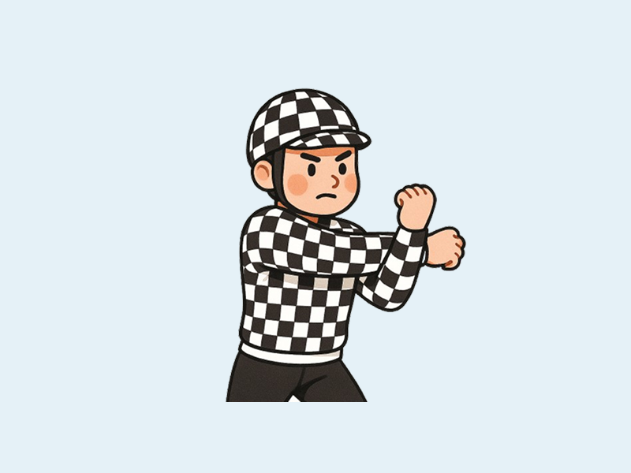
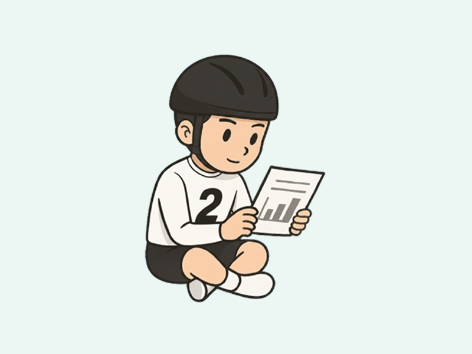
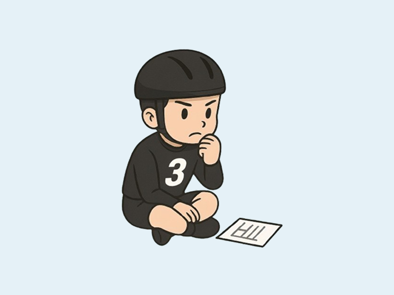
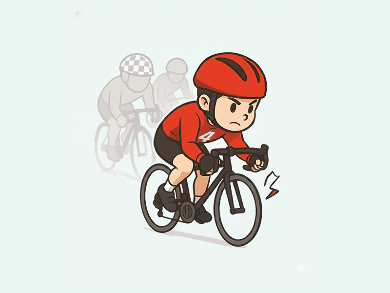
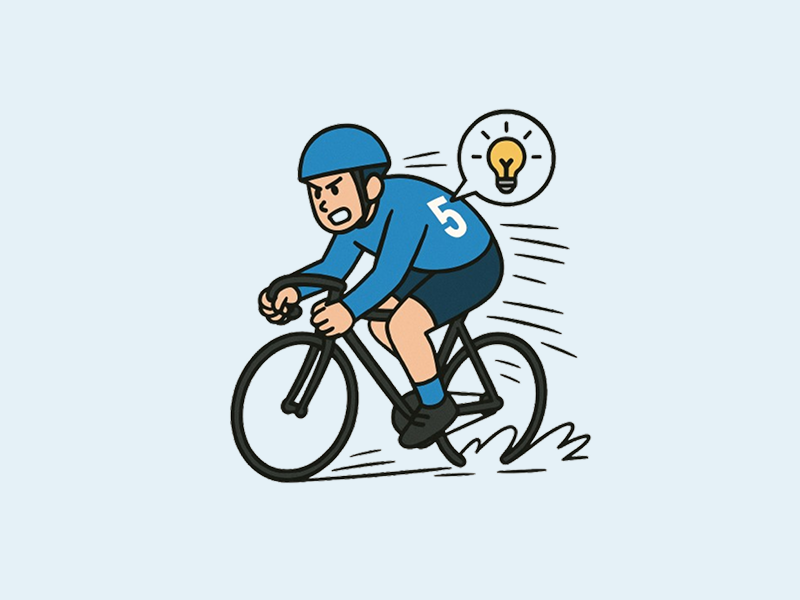
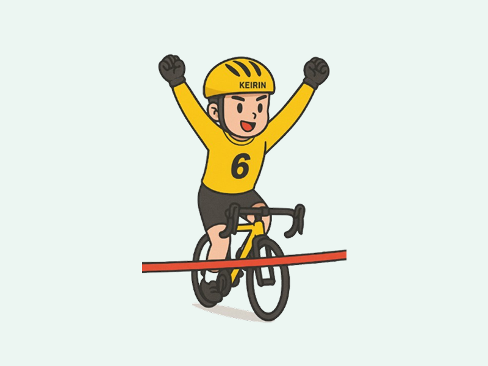
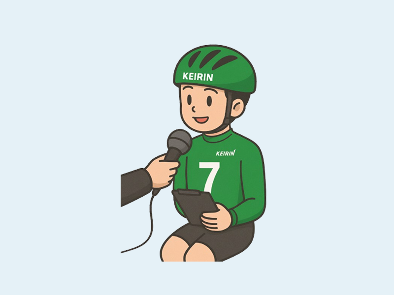
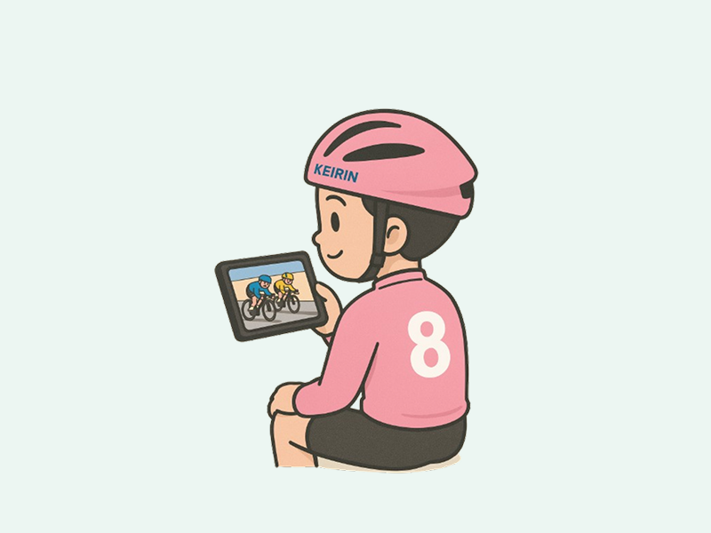
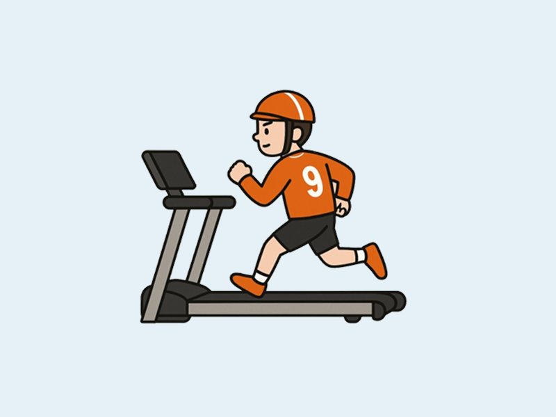
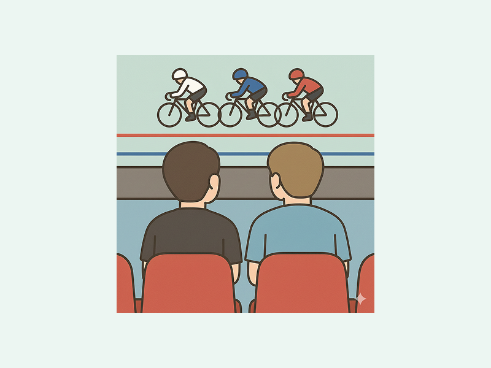

싸이클 유형 테스트
내가 경륜 선수라면?
테스트 시작하기
1. 경기 당일 준비시간에 나는?

조용히 루틴을 지키며 경기 준비에 집중한다
현장 분위기나 응원 소리를 들으며 에너지를 끌어올린다
2. 경기 전 선수들을 분석할 때 나는?

페달, 템포, 속도 등 눈에 보이는 요소부터 본다.
전체 흐름이나 레이스 패턴을 먼저 읽는다
3. 나의 경륜 경기의 전략을 선택한다면?

선수들의 분위기, 흐름, 감각적 요소도 함께 고려한 전략
거리, 속도, 효율을 기준으로 데이터 중심 전략
4. 추월 기회가 온다면?

미리 계산해 둔 거리와 타이밍에 맞춰 추월!
흐름이 열리는 순간, 감각적으로 바로 추월!
5. 내가 위험을 감수할 때는…

흐름을 뒤집는 새로운 방식이 떠올라서
눈앞의 기회나 현실적인 승리를 위해서
6. 결승선을 통과한 뒤, 나의 첫 반응은?

관중들의 환호에 화답하며 쇼맨십을 보여준다.
관중에게 조용히 인사하고 묵묵히 정리한다.
7. 경기 우승 후 인터뷰를 한다면?

전략 설명, 경기 판단 같은 논리적인 내용
감정, 동기, 진심이 느껴지는 말들을 한다
8. 경기 영상 분석 시 가장 먼저 볼 곳은?

흐름이 바뀌던 순간, 감각적으로 이상하던 부분
속도변화, 간격, 라인선택 같은 객관적 움직임
9. 내가 선호하는 훈련 방식은?

여러 선수들과 함께 하는 운동
혼자 기록을 체크하고 집중하는 개인 운동
10. 친구에게 경륜 경기에 대해 설명해줄 때 나는?

규칙, 용어, 기술 등 보이는 사실 위주로 설명
숨겨진 전략, 흐름변화, 앞으로의 가능성 위주로 설명
다시 하기